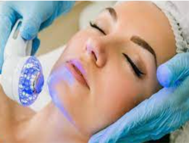

Serviços
Drenagem Linfática
A drenagem linfática ajuda a reduzir o inchaço e a retenção de líquidos, porque, através das massagens, ajuda drenar líquidos e toxinas até aos gânglios linfáticos, facilitando a sua eliminação
Limpeza de Pele
Um dos tratamentos estéticos mais realizados no mundo, a limpeza de pele tem como objetivo remover os cravos e as impurezas, desobstruir os poros e melhorar a capacidade de absorção da pele.

Tratamento com Led
A técnica funciona para previnir a pele contra acnes e rugas, além de amenizar melasmas. Os leds ,lâmpadas atuam diretamente em nível celular, favorecendo a formação de colágeno. Portanto, não há nenhuma agressão, dor ou risco de marcas ou cicatrizes.
Jato de plasma
O plasma rico em plaquetas é uma porção do sangue que pode ser filtrado para ser usado como forma de preenchimento contra as rugas. Esse tratamento com plasma no rosto é indicado para rugas profundas ou não, mas dura apenas 3 meses, porque logo é absorvido pelo corpo.
Seitai
Essa terapia age de forma parecida com a acupuntura Além de aliviar as dores, a terapia japonesa também ajuda o paciente a ter uma espécie de harmonização mental. ... O seitai é aplicado no corpo por meio de compressões em áreas específicas, atuando principalmente nos pontos identificados pela acupuntura chinesa.
Cone Chinês
O Cone Hindu, conhecido também como Cone Chinês, é uma terapia que tem como principal objetivo a desobstrução dos canais energéticos (limpeza do campo áurico), desobstrução do ouvido, nariz e garganta.